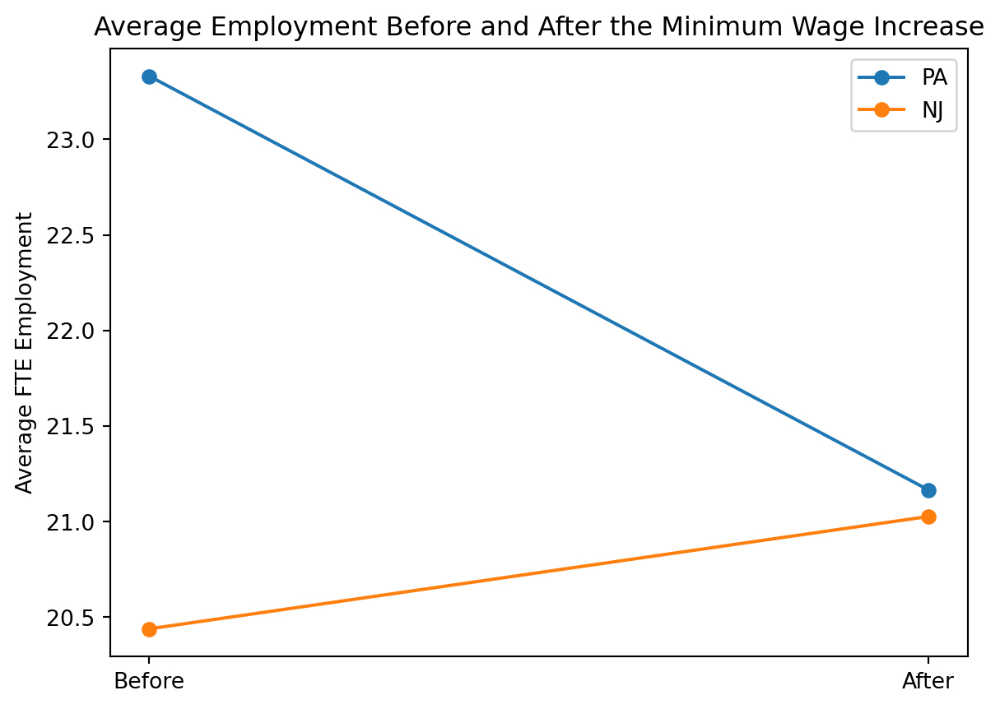

import pandas as pd
import numpy as np
import statsmodels.api as sm
import matplotlib.pyplot as plt
from pathlib import PathReplicating Card and Krueger (1994)
Economics
Causal Inference
Replication
Introduction
Card and Krueger (1994) study whether an increase in the minimum wage reduced employment in the fast-food industry. In April 1992, New Jersey raised its minimum wage from $4.25 to $5.05 per hour, while neighboring Pennsylvania did not. This policy change creates a natural comparison between treated stores in New Jersey and control stores in Pennsylvania.
The paper uses a difference-in-differences design. The basic idea is to compare employment changes in New Jersey before and after the policy to employment changes in Pennsylvania over the same period. If employment trends would have moved similarly in the two states without the policy change, then the difference in these changes can be interpreted as the causal effect of the minimum wage increase.
In this post, I replicate key findings from Card and Krueger (1994), focusing on the sample structure and the first three rows and first three columns of Table 3.
Load packages
Load the data
data_path = Path(r"C:/Users/mlyhj/Desktop/Lingyuan_Meng/hw2_data/public.dat")
print(data_path.exists(), data_path)
colspecs = [
(0, 3), # sheet
(4, 5), # chain
(6, 7), # co_owned
(8, 9), # state
(10, 11), # southj
(12, 13), # centralj
(14, 15), # northj
(16, 17), # pa1
(18, 19), # pa2
(20, 21), # shore
(22, 24), # ncalls
(25, 30), # empft
(31, 36), # emppt
(37, 42), # nmgrs
(43, 48), # wage_st
(49, 54), # inctime
(55, 60), # firstinc
(61, 62), # bonus
(63, 68), # pctaff
(69, 70), # meals
(71, 76), # open
(77, 82), # hrsopen
(83, 88), # psoda
(89, 94), # pfry
(95, 100), # pentree
(101, 103), # nregs
(104, 106), # nregs11
(107, 108), # type2
(109, 110), # status2
(111, 117), # date2
(118, 120), # ncalls2
(121, 126), # empft2
(127, 132), # emppt2
(133, 138), # nmgrs2
(139, 144), # wage_st2
(145, 150), # inctime2
(151, 156), # firstin2
(157, 158), # special2
(159, 160), # meals2
(161, 166), # open2r
(167, 172), # hrsopen2
(173, 178), # psoda2
(179, 184), # pfry2
(185, 190), # pentree2
(191, 193), # nregs2
(194, 196) # nregs112
]
names = [
"sheet", "chain", "co_owned", "state",
"southj", "centralj", "northj", "pa1", "pa2", "shore",
"ncalls", "empft", "emppt", "nmgrs", "wage_st", "inctime", "firstinc",
"bonus", "pctaff", "meals", "open", "hrsopen", "psoda", "pfry",
"pentree", "nregs", "nregs11",
"type2", "status2", "date2", "ncalls2",
"empft2", "emppt2", "nmgrs2", "wage_st2", "inctime2", "firstin2",
"special2", "meals2", "open2r", "hrsopen2", "psoda2", "pfry2",
"pentree2", "nregs2", "nregs112"
]
df = pd.read_fwf(
data_path,
colspecs=colspecs,
names=names,
na_values="."
)
df = df.apply(lambda col: pd.to_numeric(col, errors="coerce"))
df.head()True C:\Users\mlyhj\Desktop\Lingyuan_Meng\hw2_data\public.dat| sheet | chain | co_owned | state | southj | centralj | northj | pa1 | pa2 | shore | ... | firstin2 | special2 | meals2 | open2r | hrsopen2 | psoda2 | pfry2 | pentree2 | nregs2 | nregs112 | |
|---|---|---|---|---|---|---|---|---|---|---|---|---|---|---|---|---|---|---|---|---|---|
| 0 | 46 | 1 | 0 | 0 | 0 | 0 | 0 | 1 | 0 | 0 | ... | 0.08 | 1.0 | 2.0 | 6.5 | 16.5 | 1.03 | NaN | 0.94 | 4.0 | 4.0 |
| 1 | 49 | 2 | 0 | 0 | 0 | 0 | 0 | 1 | 0 | 0 | ... | 0.05 | 0.0 | 2.0 | 10.0 | 13.0 | 1.01 | 0.89 | 2.35 | 4.0 | 4.0 |
| 2 | 506 | 2 | 1 | 0 | 0 | 0 | 0 | 1 | 0 | 0 | ... | 0.25 | NaN | 1.0 | 11.0 | 11.0 | 0.95 | 0.74 | 2.33 | 4.0 | 3.0 |
| 3 | 56 | 4 | 1 | 0 | 0 | 0 | 0 | 1 | 0 | 0 | ... | 0.15 | 0.0 | 2.0 | 10.0 | 12.0 | 0.92 | 0.79 | 0.87 | 2.0 | 2.0 |
| 4 | 61 | 4 | 1 | 0 | 0 | 0 | 0 | 1 | 0 | 0 | ... | 0.15 | 0.0 | 2.0 | 10.0 | 12.0 | 1.01 | 0.84 | 0.95 | 2.0 | 2.0 |
5 rows × 46 columns
Quick checks
print(df.shape)
print(df["state"].value_counts(dropna=False).sort_index())
print(df[["sheet", "chain", "state", "empft", "emppt", "nmgrs", "empft2", "emppt2", "nmgrs2", "status2"]].head(10))(410, 46)
state
0 79
1 331
Name: count, dtype: int64
sheet chain state empft emppt nmgrs empft2 emppt2 nmgrs2 status2
0 46 1 0 30.0 15.0 3.0 3.5 35.0 3.0 1
1 49 2 0 6.5 6.5 4.0 0.0 15.0 4.0 1
2 506 2 0 3.0 7.0 2.0 3.0 7.0 4.0 1
3 56 4 0 20.0 20.0 4.0 0.0 36.0 2.0 1
4 61 4 0 6.0 26.0 5.0 28.0 3.0 6.0 1
5 62 4 0 0.0 31.0 5.0 NaN NaN NaN 1
6 445 1 0 50.0 35.0 3.0 15.0 18.0 5.0 1
7 451 1 0 10.0 17.0 5.0 26.0 9.0 6.0 1
8 455 2 0 2.0 8.0 5.0 3.0 12.0 2.0 1
9 458 2 0 2.0 10.0 2.0 2.0 9.0 2.0 1Construct key variables
df["fte_before"] = df["empft"] + df["nmgrs"] + 0.5 * df["emppt"]
df["fte_after"] = df["empft2"] + df["nmgrs2"] + 0.5 * df["emppt2"]
# status2 handling based on the paper:
# permanently closed stores -> employment = 0
# temporarily closed / renovation / other temporary closure -> missing
df.loc[df["status2"] == 3, "fte_after"] = 0
df.loc[df["status2"].isin([2, 4, 5]), "fte_after"] = np.nan
df["fte_change"] = df["fte_after"] - df["fte_before"]
df["state_name"] = np.where(df["state"] == 1, "NJ", "PA")
df[["sheet", "state", "status2", "state_name", "fte_before", "fte_after", "fte_change"]].head(10)| sheet | state | status2 | state_name | fte_before | fte_after | fte_change | |
|---|---|---|---|---|---|---|---|
| 0 | 46 | 0 | 1 | PA | 40.50 | 24.0 | -16.50 |
| 1 | 49 | 0 | 1 | PA | 13.75 | 11.5 | -2.25 |
| 2 | 506 | 0 | 1 | PA | 8.50 | 10.5 | 2.00 |
| 3 | 56 | 0 | 1 | PA | 34.00 | 20.0 | -14.00 |
| 4 | 61 | 0 | 1 | PA | 24.00 | 35.5 | 11.50 |
| 5 | 62 | 0 | 1 | PA | 20.50 | NaN | NaN |
| 6 | 445 | 0 | 1 | PA | 70.50 | 29.0 | -41.50 |
| 7 | 451 | 0 | 1 | PA | 23.50 | 36.5 | 13.00 |
| 8 | 455 | 0 | 1 | PA | 11.00 | 11.0 | 0.00 |
| 9 | 458 | 0 | 1 | PA | 9.00 | 8.5 | -0.50 |
Check wave 2 values
print(df[["status2", "empft2", "emppt2", "nmgrs2", "fte_after"]].head(10))
print(df["status2"].value_counts(dropna=False).sort_index()) status2 empft2 emppt2 nmgrs2 fte_after
0 1 3.5 35.0 3.0 24.0
1 1 0.0 15.0 4.0 11.5
2 1 3.0 7.0 4.0 10.5
3 1 0.0 36.0 2.0 20.0
4 1 28.0 3.0 6.0 35.5
5 1 NaN NaN NaN NaN
6 1 15.0 18.0 5.0 29.0
7 1 26.0 9.0 6.0 36.5
8 1 3.0 12.0 2.0 11.0
9 1 2.0 9.0 2.0 8.5
status2
0 1
1 399
2 2
3 6
4 1
5 1
Name: count, dtype: int64Replicate Table 3: first three columns and first three rows
pa_before = df.loc[df["state_name"] == "PA", "fte_before"].mean()
nj_before = df.loc[df["state_name"] == "NJ", "fte_before"].mean()
pa_after = df.loc[df["state_name"] == "PA", "fte_after"].mean()
nj_after = df.loc[df["state_name"] == "NJ", "fte_after"].mean()
pa_change = pa_after - pa_before
nj_change = nj_after - nj_before
table3_part = pd.DataFrame(
{
"PA": [pa_before, pa_after, pa_change],
"NJ": [nj_before, nj_after, nj_change],
},
index=[
"1. FTE employment before, all available observations",
"2. FTE employment after, all available observations",
"3. Change in mean FTE employment"
]
)
table3_part["Difference (NJ - PA)"] = table3_part["NJ"] - table3_part["PA"]
table3_part.round(2)| PA | NJ | Difference (NJ - PA) | |
|---|---|---|---|
| 1. FTE employment before, all available observations | 23.33 | 20.44 | -2.89 |
| 2. FTE employment after, all available observations | 21.17 | 21.03 | -0.14 |
| 3. Change in mean FTE employment | -2.17 | 0.59 | 2.75 |
Compare with the published values
The paper reports approximately the following values for the first three rows and first three columns of Table 3:
- Before: PA = 23.33, NJ = 20.44, Difference = -2.89
- After: PA = 21.17, NJ = 21.03, Difference = -0.14
- Change: PA = -2.16, NJ = 0.59, Difference-in-differences = 2.76
The table above shows my replicated values from the public data file.
Replicate Table 4 column (i)
reg_df = df.loc[
df["fte_change"].notna()
& df["wage_st"].notna()
& df["wage_st2"].notna(),
["fte_change", "state", "wage_st", "wage_st2"]
].copy()
print(reg_df.shape)
X = pd.DataFrame({
"const": 1,
"NJ_dummy": reg_df["state"]
})
y = reg_df["fte_change"]
model1 = sm.OLS(y, X).fit()
coef = model1.params["NJ_dummy"]
se = model1.bse["NJ_dummy"]
table4_col1 = pd.DataFrame({
"Coefficient": [coef],
"Std. Error": [se]
}, index=["New Jersey dummy"])
table4_col1.round(2)(351, 4)| Coefficient | Std. Error | |
|---|---|---|
| New Jersey dummy | 2.28 | 1.19 |
Compare with the published value
The published Table 4 column (i) reports a coefficient of about 2.33 with a standard error of 1.19. My replication produces a coefficient of 2.28 with a standard error of 1.19, which is very close to the published result.
The small difference in the point estimate is likely due to minor sample-definition differences in the public-use data, especially in how missing wave-2 wage information and store status are handled. Still, the replicated result leads to the same conclusion as the original paper: employment in New Jersey did not fall relative to Pennsylvania after the minimum wage increase. ## Additional analysis: a simple DID plot
plot_df = pd.DataFrame({
"State": ["PA", "PA", "NJ", "NJ"],
"Period": ["Before", "After", "Before", "After"],
"FTE": [pa_before, pa_after, nj_before, nj_after]
})
for state in ["PA", "NJ"]:
subset = plot_df[plot_df["State"] == state]
plt.plot(subset["Period"], subset["FTE"], marker="o", label=state)
plt.ylabel("Average FTE Employment")
plt.title("Average Employment Before and After the Minimum Wage Increase")
plt.legend()
plt.show()
The figure gives a visual version of the difference-in-differences result. Employment fell in Pennsylvania between the two survey waves, while it rose slightly in New Jersey. This creates a positive difference-in-differences estimate, which matches the pattern shown in Table 3 and supports the paper’s main argument that the minimum wage increase did not reduce fast-food employment in New Jersey relative to Pennsylvania.
Conclusion
This replication reproduces the main pattern in Card and Krueger (1994). The descriptive results from Table 3 match the published values almost exactly, and the reduced-form regression from Table 4 column (i) is also very close to the reported estimate. Overall, my replication supports the paper’s main conclusion: the 1992 minimum wage increase in New Jersey did not reduce fast-food employment relative to Pennsylvania in this sample.